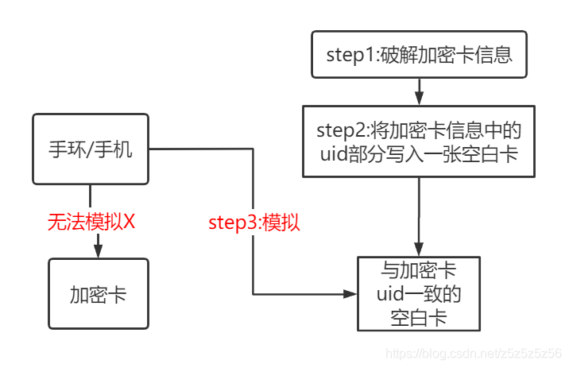

注意！
本教程仅教学模拟相关知识与如何使用手环模拟全加密校园卡，仅供个人学习，请勿修改数据金额，由此带来的任何非法后果均由个人承担。
本教程只涉及 0 扇区 UID 模拟教学，不涉及金额等其他信息修改教学。
模拟加密卡想法由来已久，但由于网络上方法步骤参差不齐，看了很多很多资料最近才终于弄清楚了，现进行一个整理，并试图写一个教程。
材料准备

PN532 模块及所需材料
硬件：PN532、USB转串口、4根杜邦线、UID卡（注意本教程不适用于 CUID/UFUID 卡！）、你要模拟的手环（我的是华为荣耀手环5）+连接手环的手机/含有NFC的手机
软件：蛐蛐、MifareOneTool、驱动
模拟原理

NFC 技术原理
- 手环不能直接模拟加密卡，因为加密卡除了扇区0（存UID的扇区）还含有其他信息
- 为了让手环可以模拟，我们需要制作一张只有扇区0（UID同原加密卡相同）含有信息的空白UID卡
- 之所以使用UID卡，是因为它可以使用后门特殊指令，达到对UID（卡号）进行修改的目的
- 为了制作这张满足需求的空白卡，我们要先读出原加密卡的0扇区信息，这涉及到使用蛐蛐进行破解（全加密卡）
- 用手机控制手环，模拟空白卡后的步骤，是为了将原加密卡信息（除了0块之外的63块信息）写入手环中
一些名称：S50卡 = 加密为 SAK08 的卡 = 常见的校园卡 = MIFARE Classic 1K
模拟教程
Step 0：环境准备
你需要使用4根杜邦线将USB转串口与PN532连接：
- GND ---- GND
- VCC ---- +5V/VCC
- TXD ---- RXD
- RXD ---- TXD
如果你没有安装过驱动，还需要安装 USB 转串口的驱动（CH340 驱动）。
Step 1：破解加密卡信息（全加密卡）
首先我们来测试环境是否搭好以及卡是否是全加密卡。
打开 MifareOneTool，点击检测连接，应该出现以下信息。然后将校园卡放在 PN532 上，点击扫描卡片，这一步可以帮助我们了解卡片的信息，如果是 SAK08 则大概率可以复制。
然后点击一键解原卡，如果是全加密卡，你将会看到破解界面。
关闭 MifareOneTool，打开蛐蛐，仍然将原卡放置在 PN532 上，点击右上角：全加密卡破解秘钥。然后将开始进行嗅探破解，耐心等待，这个过程需要 30-60 分钟的时间，当右侧出现 3 个以上的相同秘钥时，则很有可能是正确的。
将右侧出现的秘钥保存好，然后复制黏贴到上方已知秘钥中，再点击使用秘钥读取。读取也需要 30 分钟左右的时间，读取完成后原卡信息将保存为蛐蛐同目录下的 key.dump，为了防止被覆盖，强烈建议你复制出来保存好！我们复制出来把它命名为 原卡.dump。
Step 2：制作空白卡
关闭蛐蛐，再次打开 MifareOneTool，如下依次点击高级操作模式——Hex编辑器——文件——打开，打开前面保存的 原卡.dump。
上下切换扇区以显示信息，我们将扇区0的第0块信息复制出来，然后点击文件——新建——先点击一下扇区1然后点击扇区0（这一步的目的是初始化新文件）——再将信息黏贴到新文件的扇区0的第0块——点击修改扇区——然后另存为 空白卡.dump，注意是另存为！是 dump 文件！
接下来，我们将空白的 UID 卡放到 PN532 上，选择写UID卡，打开 空白卡.dump 文件，将其写入 UID 卡中，达到写入卡号的目的。
Step 3：模拟
将手环连接手机，选择模拟卡功能，模拟我们刚刚写好的 UID 卡（注意是模拟，不是创建空白卡！）
PS：通常加空白卡功能只有安卓手机的 APP 里面才有，苹果手机里面被阉割了找不到，记得用安卓手机哦，我使用的是华为运动健康 APP。
等待一段时间后模拟成功即可。
Step 4：写原卡信息，激活手环
在 Step 3 中我们模拟了 0 扇区 0 块，相当于已经写入了 UID，现在还需要写入另外的 63 块信息（加密数据），使得手环完全模拟原卡。
我们打开蛐蛐，把 UID 卡放在 PN532 上，点击使用默认密钥读取。这一步的目的是使得与蛐蛐同目录下的 key.dump 文件中的秘钥（原卡的秘钥）被蛐蛐软件识别并加载，这样知道了秘钥才可以等下写入手环加密卡数据。
然后拿走 UID 卡，放上手环，浏览文件选择 原卡.dump，点击写入，当看到成功信息时，就说明写入成功了！
如果是其他信息，则说明写失败，记得多试几次，或者从手机端删除此卡，再重复上述步骤。
接下来你就可以快乐地去刷手环了！
其他模拟校园卡的方式
1. STM32/Arduino + RC522
该方法需要在 STM32 上建立工程，使用 RC522 的库函数向 522 发送指令，实现修改白卡 UID 的目的。这种方法的自由度大，适合理解原理和高级 DIY 玩家。
2. 小米手机直接模拟
据测试，MIUI12 下带有 NFC 功能的小米手机可以直接模拟全加密卡了。如果是弄到手环上，还是按上面的步骤来。
参考资料
- B站视频教程
- 电子兔淘宝店资料